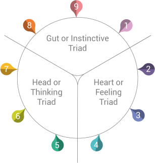

However, they do so very differently. Enneagram Type 9 seems to move away
from instinct, while Enneagram Type 8 and Enneagram Type 1 respectively over
and under express what their instinct says to them.
As they lose
control, the three members of this Enneagram Triad have to deal with anger
either by letting it out or repressing it. It’s their gut they trust to
determine whether the surroundings are safe or even fair, and any lack of
balance can make these Enneatypes very uncomfortable. That’s when their
defense mechanisms kick in.

Gut (Anger)
Head (Fear)
Heart (Shame)
Why do Enneagram Type 1 belong to The Gut Triad? Enneagram Type 1s use their instincts to compare reality to their own
ideals and standards.
Their gut tells them what needs to be
changed and what’s not fair, so they can take action. As they seek
integrity, Enneagram 1 types try to ease their instincts and adjust them
to what’s right.